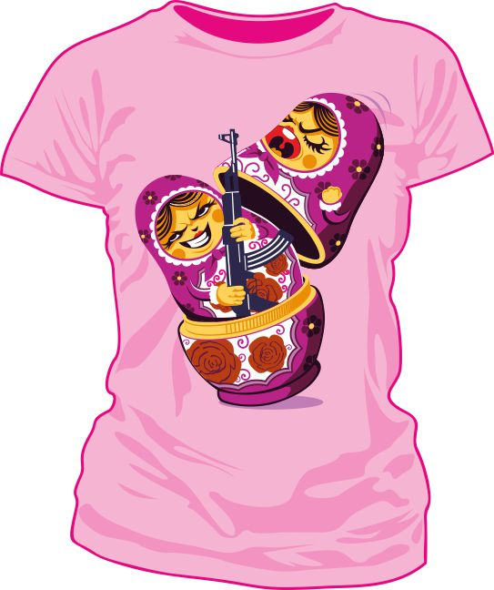

ФУТБОЛКИ
sergey / 23.08.2010, 00:43/00:41
Форум:
Многие, кто занимается векторной графикой, пришли или прийдут к созданию принтов на футболки. Для меня это очень занятно.
Большая, белая рекламная площадь — пиши, рисуй, что хочешь, главное чтоб носили.
Тем более на данный момент множество сайтов, готовых платить, пускай не щедро, но стабильно.
Многоуважаемый Е. Ларионов не даст соврать — доходное это дело.
Короче, в этой теме предлагаю делиться идеями — "будет, не будет носиться".
Иногда есть хороший афоризм, а с визуализацией проблема, или наоборот: есть картинка, а как подписать...?
Покупатели найдут продавцов, но а продавцы покупателей.
Размещение своих идей здесь на сайте — подтверждение авторства.
Может и свой сайт по принтам сделаем в рамках cdrpro.

Извините не очень в теме по поводу печате, но вопрос такой: Какой метод позволяет сделать принт чтоб футболка "дышала", и принт был неощутим на прикосновения. Ведь пленки і разние флоки забивают текстуру ткани. Делал себе принт методом шелкографии, ефект лутше предедущих но все равно ткань забита краской. Где то на форумах читал что буржуйские сайт-принты делают, (незнаю как правильно называется) "дишашщюю печать" тоесть краска впитывается в структуру ткани и на прикосновение неощутима.
YuraYur, найдёшь — дай ссылку)
YuraYur, зависит от того, какой краской печатать той же шелкухой. В основном, печатают пластизолевыми красками - они дешевые и печатный процесс простой, краска не сохнет на воздухе. В этом случае получается толстый слой краски и на ощупь как резина. А если печатать красками на водной основе, как раз получится тонкий слой, воздух будет сквозь ткань проходить. Или, если синтетика, есть тоже краски специальные. Недавно печатали футбольную форму дорогую - нанесение как из магазина получилось). Еще есть "вытравные" краски - это когда футболка черная, а там где краску нанесли линяет до белого цвета. Но тут, понятное дело, цвет не сделать, зато и слоя краски вообще нет)
Страницы